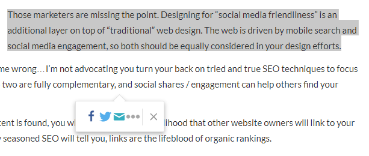

Melissa Guzman's: Web Developer Examples and Resources
Social Media Optimization (SMO)
Social Media Optimization in web design is a key part of digital marketing. According to Dominique Jackson, from socialsporout.com, “Social Media Optimization is essentially using social media as a catalyst to grow your company’s online presence...SMO is about strategically creating, building and maximizing your social media plan to connect with your target audience.” (Jackson)
So what does this have to do with web design? Well, it means creating websites that have the intention of using social media as a platform to drive people to your website. This can happen in multiple ways. It could be using a plug in or content management system that allows you to auto-populate a post for Facebook or Twitter. (Bryant) Doing so ensures that the content being from your website is shared by the visitor looks good and is understandable. When a visitor to your website shares your content, this increases web traffic to your website, which in turn may increase profitability. Furthermore, when a website visitor, shares your content, they are distributing that content to their social circle, and the cost of spreading your content is minimal if it is already built into your web design. (Bryant)
Ways to implement Social Media Optimization vary greatly and may be dependant on your target audience, the functionality of your website and your marketing goals. If your company has a social media profile, it is best to ensure that your profile is complete with a picture, company information and your website. Not only should people be able to find your company on social media, but you want to engage with your customers on social media. (Jackson) Another way to use Social Media Optimization is to format your website to encourage your website visitors to posting to what they are reading social media. For example, when a visitor to your website visits your page and highlights a particular phrase, your visitor can be prompted to share that specific phrase on social media. As you can see in the screenshot below, when a particular phrase is highlighted from the website, the user is immediately prompted to share it on social media. (business2community.com)
There are many other ways to implement Social Media Optimization into your website design. These were just a few ways to introduce it to your website design and why it is so important that you design with Social Media Optimization in mind.